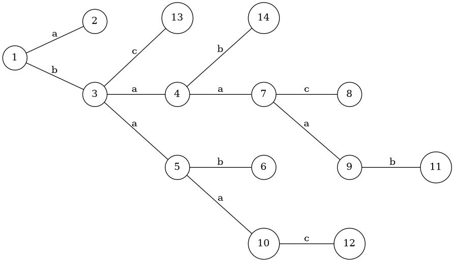

Codeforces 题目选讲 3
文章目录
Minimum Euler Cycle
给你一个有向图。。（有向边）。你要求出字典序最小的欧拉回路的端点序列。例如时为。
由于输出太大，你只需要输出一个区间。
。
构造 贪心
这序列一定是。表示。
于是可以简单地求出了。
Divisor Paths
给你一个整数，要构建一个无向图：，。设（）的边权为。
现在次询问两点的最短路径数。
。
数学 数论 盲猜
一条边相当于乘一个质数走到。
直觉告诉我们的最短路是的权值。相当于你可以从开始，除掉一些比多的质数，再乘上一些比多的质数。也可以发现最短路一定经过。也就是说最短路径数是（两边的路径数只和商有关，因此是一个一元函数）。
那么最短路的数量，相当于就是你乘（除）质数的顺序。那么我们只关心不同质数间的顺序。这就是个多重组合数。那么就可以容易地计算了。
最后，由于是的约数。因此分解质因数的时候枚举的质因数即可。
时间复杂度。
Strange Function
对于整数序列，设表示的前缀最大值序列。如。
给出长度为的序列和长度为的序列。你可以以的代价删掉（代价可能是负的），要求用最小的代价删掉一些数，使得。
。
DP 线段树
设表示前个数的最小代价使得。考虑：
- 若。则可以删也可以不删。因此它的代价贡献是。
- 若，则可以删。也可以不删。如果不删的话，会多一种转移：。
- 若。如果选，那么必须，不然不合法；如果不选（删掉），则代价就是。
对第二维建线段树维护 DP 即可。
时间复杂度。
Substring Search
给出一个小写字母的一一映射（长度为的排列）。规定字符串和匹配当且仅当：
- ；
- ，或。
现在给出两个串（），求出在的每个位置是否匹配。输出长度为的 01 串。
。
多项式 随机
或者，等价于。因此在处匹配的条件是
那么我们求出即可。
如果是的形式，我们可以简单地使用多项式乘法计算。而上式实际上可以拆开分成 5 项，分别对应的 0 到 4 次方项。因此我们对每一项都做多项式乘法最后加起来即可。
时间复杂度。但这样有一个问题。就是可能被卡 NTT 模数。因此我们给每个字母分配一个随机权值。这样就行了。
Edge Weight Assignment
给出一棵个点树。你可以给每条边一个边权。要求赋权使得任意两个叶子的路径异或和为。
问不同权值个数的最大值和最小值。
。
分类讨论 构造 手玩 DP
题目中的条件可以转化为，选择一个根结点。则任意叶子结点到根的异或和相等。不妨选一个非叶子结点作为根。
考虑最小值。那么容易发现同一个结点的所有叶子儿子的父边是权值相同的，可以直合并成一个结点。手玩发现，答案是 1 或者 3。3 的构造如下（设）：

也可以简单描述一下。考虑从根结点往下构造。设表示构造的子树的边权，使得子树里所有叶子点到的异或和为。那么对于，我们给的叶子儿子的父边赋权为，然后给的非叶儿子的父边赋权为并递归构造。
1 的情况很平凡。
考虑最大值。经过刚才的思考过程，可以发现，两个子树是独立的，可以任意赋权。因此把叶子儿子合并后做一个简单的树形 DP 即可。
Nested Rubber Bands
你有一棵个点树。要求你构造平面上个封闭图形。若和相交（边界相交），当且仅当。问这个封闭图形中至多有多少个互相嵌套的图形。即找一个最大子集，使得，和是包含关系。输出。
。
DP 手玩
考虑这样一个问题：若且，那么和是什么关系？
容易发现，、相交这两个条件有且仅有一个满足。
我们断言：一个合法的相互嵌套方案是集合使得：
- 中任意两个点不相邻。
- 存在树上的一条简单路径使得中的点到的距离小于等于（毛毛虫）。
证明：反证法。不妨考虑下图的情况。其他情况可以类比：
在这里是不分顺序的。不妨设。
那么根据刚才的小发现，一定在被包含；于是也一定被包含，也一定被包含。
那么，而是相交的，矛盾。
而如果不存在上图的方案，可以证明一定是毛毛虫的形式。或者说我们还可以证明，毛毛虫为什么一定合法？
这个也不难。枚举在末尾加一个子树，看子树的根结点选或者不选。然后都可以构造使得新构造的把之前的都包含了。
证完后就可以求答案了。可以直接树形 DP 或者换根。
复杂度。
Sergey’s problem
给你一个个点条边的有向图（无自环，可能有重边）。要求你求出一个点集使得对于任意不在中的点，都存在一个点使得走不超过 2 步可以到。可以证明一定有解。
。
归纳法 构造
如果我选了点，那么走一步能到的点就不能选。另一方面，如果走一步能到的某个点被选了，那么意味着和走一步能到的点都被覆盖了。因此我们可以把和它走一步能到的点删了，对剩下的图构造。构造完了我们再看是否有走一步能到的点被选。如果有，就不用选了。否则就选。
写一个 DFS 即可。
时间复杂度。
Large Triangle
给你二维平面上个点，问你是否存在三个点使得三角形面积恰好为。
。
微调
如果确定了两个点，那么把它当作一个向量，与其他点算叉积，则可以排序后二分判定。
但问题是，你选择不同的向量，顺序也不一样。每次排序的话，就是的。
不过考虑一下，如果我只是轻微旋转一下这个向量，那么只有这个向量的两个端点的顺序发生变化，两者交换一下即可。只要我们别旋转到超过下一个向量，则其他的点的顺序也是不变的。
因此把个向量按斜率排序，然后按序交换并二分即可。时间复杂度。
Raining season
给一棵个点的树，每条边的权值是一个一次函数。给你，问你在时树的直径是多少。输出个数。
。
边分治 闵可夫斯基和 凸包 计算几何
一条路径的权值是一次函数。
则直径的函数是半平面交的形式。
考虑边分治。首先多叉树转二叉树。
假设当前的连通块的大小是，考虑经过当前分治边的直径。显然可以看作是两边各选一个点的一次函数加起来，对这个一次函数求半平面交。但这东西复杂度太大。
将半平面交对偶成凸包（一次函数对偶成点）。容易发现，两个一次函数的加法，就是两个点（向量）的加法。则两边的一次函数加起来的半平面交，相当于对偶后两边的点加起来的凸包。也就是两边的凸包的闵可夫斯基和。这个可以做，而且得到的凸包的大小也是的。
对于每个连通块我们都做一次，这样会得到总大小为的凸包集合。把这些点全丢一起再求一次凸包（注意是凸包合并，不是闵可夫斯基和），再对偶回去就得到直径的函数了。
然后求一下的点值即可。
时间复杂度。
由于一般的闵可夫斯基和太容易出锅，因此代码里写的是两个上凸壳的闵可夫斯基和。这样的好处是不用极角排序，按 x 轴排序也能做。
Chiori and Doll Picking (hard version)
给出一个非负整数集合，设
求。
。
线性基 meet in middle FWT 组合数学
先求出线性基，设能表出的数的集合为。那么答案显然就是线性基的数的答案乘。
若，则我们可以暴力枚举的数并统计答案。
若，构造序列，。那么有一些性质。不妨设的 FWT 变换为。
性质 1：的取值只能为或。
我们知道。而中值为的数只有个，因此若，则必然满足：，是偶数。
那么这样的一共有多少个？假设满足该条件的的集合为。那么容易发现，，，也就是说有关于异或运算的封闭性。因此可以求出的一个线性基。容易发现的大小是小于等于的！因为你确定了中自由元的值后，根据“偶数条件”，其他主元的值也确定了。
我们可以使用一些技巧做到枚举中的数。
那么我们再考虑 FWT 回去求答案，则
容易发现。后面的那个式子只和有关，即。那么我们想办法预处理即可。
不妨设，那么原式可以化为
Make Symmetrical
二维平面上，要求支持次操作：
- 插入一个整点（），保证这个点之前没有插入过。
- 删除一个点（之前插入过）。
- 给出（），求至少再加入多少个点可以使整个点集关于直线轴对称。
。
暴力
关于轴对称的点，到原点的距离是相等的。而实际上满足在固定的情况下的点的数量是不多的。在本题中至多有个点。
不妨考虑，每次加入一个点的时候，我们地更新答案。然后查询的时候直接查表即可。
值得一提的是，在计算两个点的对称轴的时候由于这两个点到原点的距离相等，因此可以直接向量加法求出（菱形）。
用 map 维护。时间复杂度，使用 unordered_map 可以更快。
Make Square
如果序列中存在两个数（）使得是完全平方数，则是好的。
对于一个序列，每次操作，你可以选择一个元素并乘上一个质数，或者选择一个元素并除掉一个质数。表示最少的操作次数使得变成好的。
给你一个序列，每次询问区间的。
。
DP 二进制表示 异或 扫描
首先想到把平凡因子去掉，这样每个数就最多有个互不相同的质因子，即最多有个约数。
现在，要让是完全平方数（即到的最短距离），则相当于要先走到的某个约数，再从走到。
考虑扫描线 DP。考虑，设表示最大的（）使得且有个质因子（即走步到）。再设表示最大（靠右）的使得的答案。
考虑如何从更新到。加入一个，则我们可以先枚举，用走到再走步来更新对应的（即使到和走的步中有相同的质因数也没关系。因为我们求的是）。更新完再用走到来更新。
然后我们就可以求出以为右端点的询问的答案了。
时间复杂度。
修订记录
- 2021年3月25日 第3次修订
- 2021年2月11日 第2次修订
- 2020年4月24日 创建文章